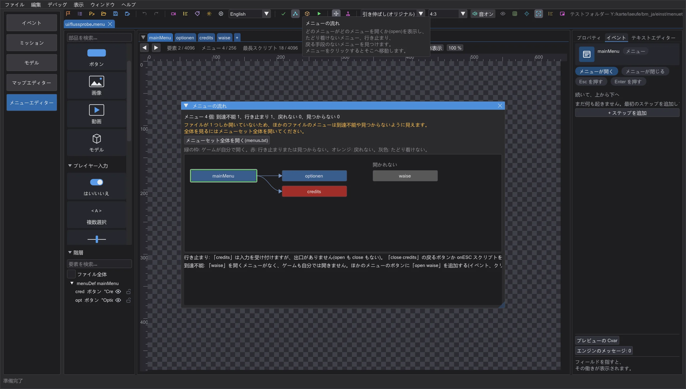
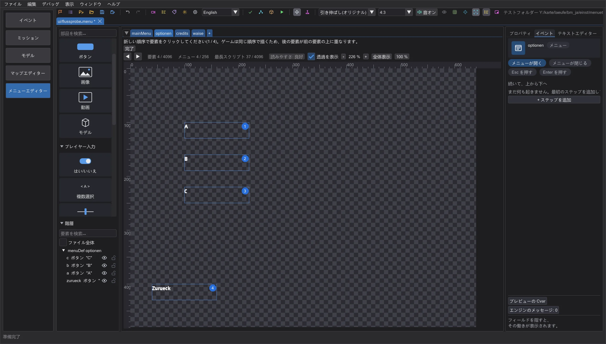
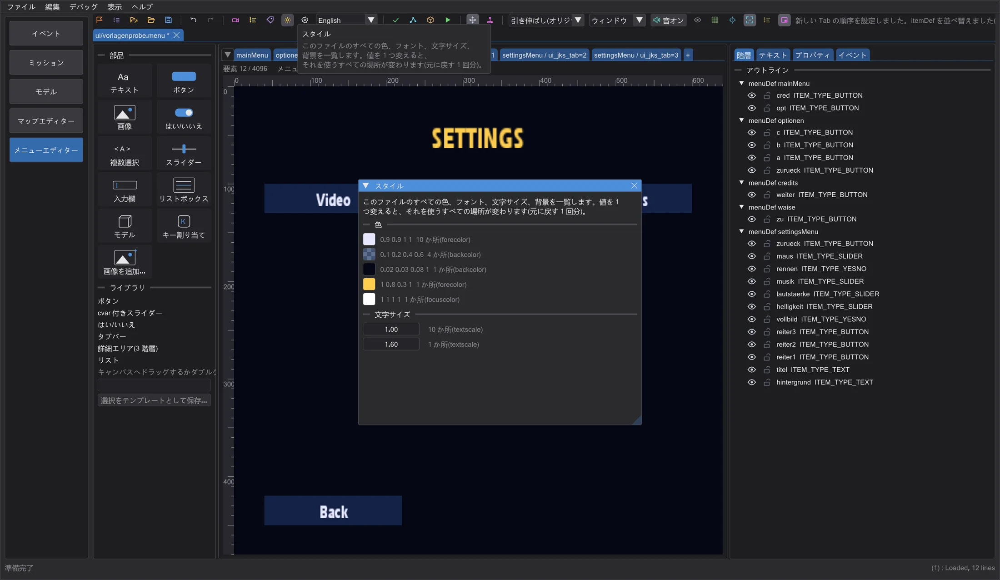
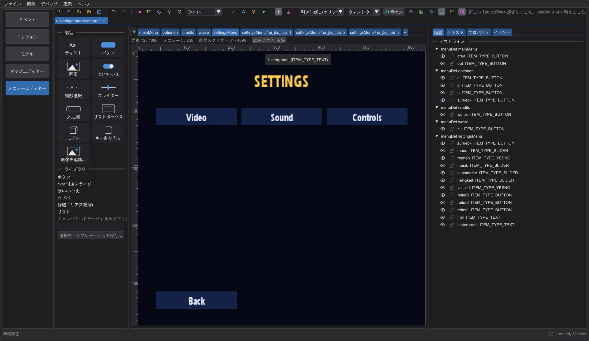
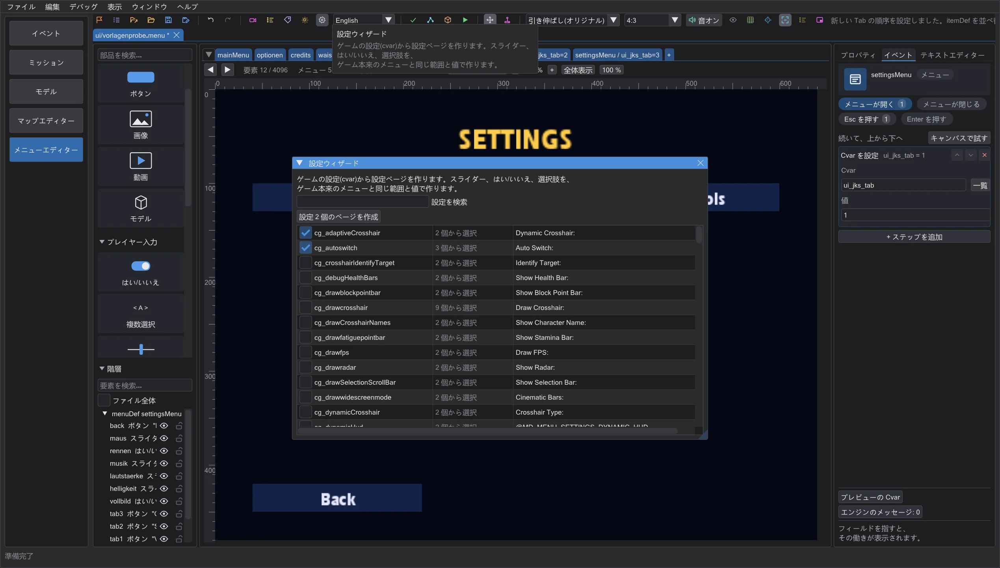
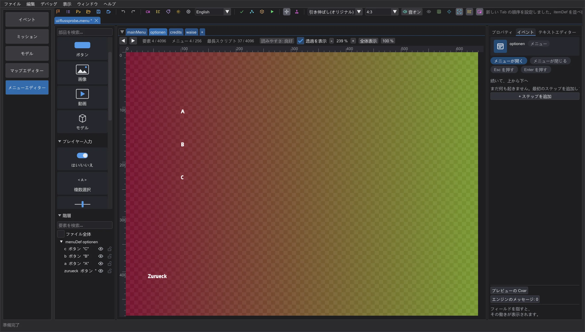
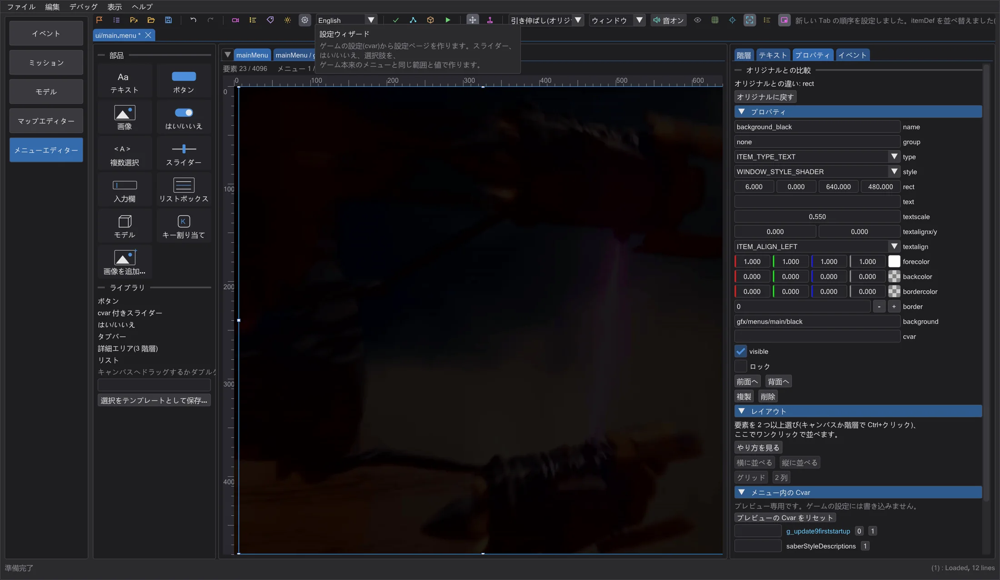

メニューエディター: 流れ、Tab の順序、スタイル、テンプレート
どのメニューがどのメニューを開き、プレイヤーがどこで行き詰まるかを確認し、クリックでキーボードの順序を決め、色やフォントを一度に全部変え、出来上がったメニューや設定ウィザードから始め、参考画像の上でデザインを再現し、要素をゲームのオリジナルに戻せます。
メニューの流れ#

ツールバーの メニューの流れ は、開いているファイルのメニューを箱、open を矢印として、ゲームが自分で開くメニュー(緑の枠: メインメニュー、ロード画面、ゲーム内メニュー。エンジンのコードから)から列ごとに表示します。赤い箱は行き止まり(入力は受け付けるが出口がない)か、どのファイルにもない移動先です。オレンジの箱はほかのメニューから開かれるのに戻る手段がありません(自分を閉じる close、onESC、元のメニューを開く open のどれもない)。灰色の箱にはたどり着けません。下の一覧に何をすればよいかが書かれています。箱か一覧の行をクリックするとそのメニューへ移動します。先にメニューセット全体を開いてください。そうしないとほかのファイルのメニューが見つからないように見えます。
Tab の順序#

Tab の順序 は、キーボードのフォーカスを受け取れる要素に、エンジンが使う順序で番号を付けます(Menu_SetNextCursorItem: itemDef の順序。装飾、非表示、cvar で無効な要素は除く。フォーカスがないとき、ゲームはファイルの 2 番目の要素から始めます)。変更するには、新しい順序で要素を順にクリックします。最後のクリックでエディターが itemDef を並べ替えます(元に戻す 1 回分)。ゲームは同じ順序で描くので、後の要素が前の要素の上に重なります。フォーカスを受け取れない要素はそのままです。
スタイル#

スタイル は、ファイルのすべての色(forecolor、backcolor、bordercolor、outlinecolor、focusColor、disableColor、descColor)、フォント、文字サイズ、背景を、よく使われる順に集めます。値を変えると、それを使うすべての場所が一度に変わり、.menu には普通の値として入ります(間隔、コメント、引用符はそのまま。元に戻す 1 回分)。#include ファイルやマクロの値は数えますが、変更しません。
テンプレートと設定ウィザード#

ページの横の + で 空のページ か、メニュー全体を追加できます: メインメニュー(ゲームが起動時に開く)、タブ付きの設定ページ、クレジット、ロード画面(ゲームが読み込み中に表示)。どのゲームのバージョンでも読めるキーワードだけを使います。メインメニューとロード画面にはエンジンが探す名前(シングル mainMenu と loadscreen、マルチ main と Connect)が付き、メインメニューは設定とクレジットのテンプレートを開きます。メニューの流れには問題なく表示されます。

設定ウィザード は、ゲーム本来のメニューにあるすべての設定(cvar)を、そこで使われている操作部品(範囲付きスライダー、はい/いいえ、項目付きの選択)と一緒に一覧にします。必要な設定にチェックを入れ、検索欄の下のボタンをクリックすると、それらの操作部品、タイトル、戻るボタンの付いた設定ページが追加されます。一覧は設定・操作部品・テキストの 3 列で、列の境界をドラッグすると広げられます。切れたテキストはマウスを重ねると全体が表示されます。
参考画像、オリジナル、上限#

参考画像 は PNG、JPG、TGA を半透明でキャンバスに置きます。メニューの下か、全画面の背景で隠れる場合は上(メニューの上)に置け、不透明度 を調整できます。描画の補助にすぎず、メニューや pk3 には入りません。

ゲームのメニューでは、プロパティの オリジナルとの比較 に、選んだ要素がゲームの元ファイルと違うかどうか、どのキーワードが違うかが表示されます。オリジナルに戻す で元の itemDef に戻せます(元に戻す 1 回分)。ページの下の行は、ゲームのバージョンの上限(メニューごとの要素、メニュー数、最長スクリプト)に対する使用量を示し、80% からオレンジ、上限で赤になります。上限を超えるとゲームは残りを黙って捨てるためです。
上限の横の 読みやすさ は、エディターの目安(ゲームの上限ではありません)でヒントを数えます: 640 x 480 画面で 8 ポイント未満の文字、塗りつぶし領域で 3:1 未満のコントラスト、ゲームのある言語ではフィールドに収まるのに別の言語では収まらない文字(ゲームのフォントとゲームデータの全言語のテキストで測定)。マウスを重ねると解決方法付きの一覧が出て、クリックすると次のヒントのある要素を選びます。
保存していない変更のあるタブを閉じると、まず確認します: 保存、保存せずに閉じる、キャンセル。